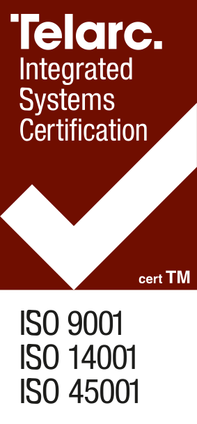
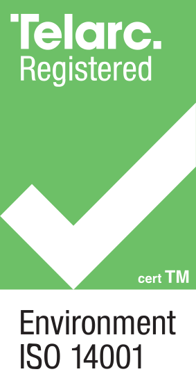
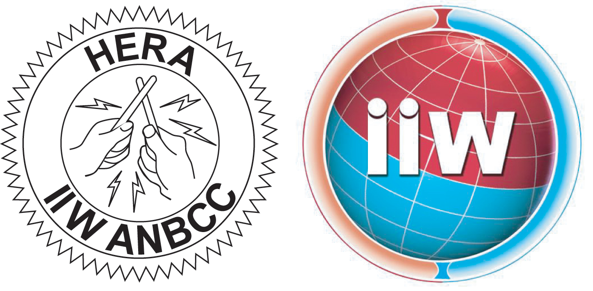
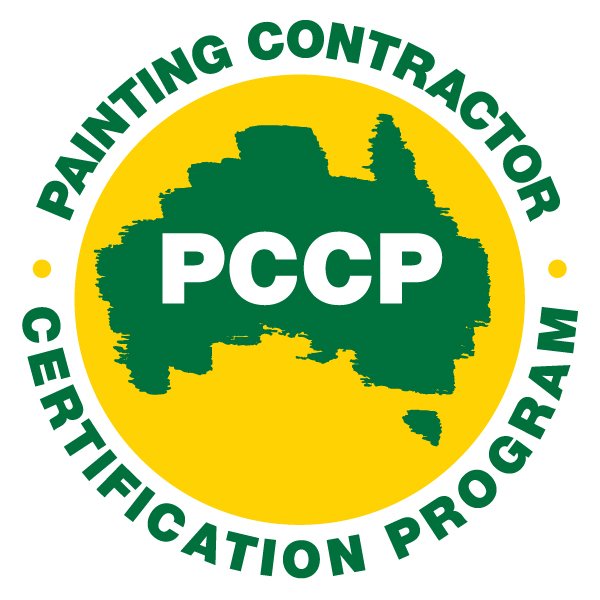
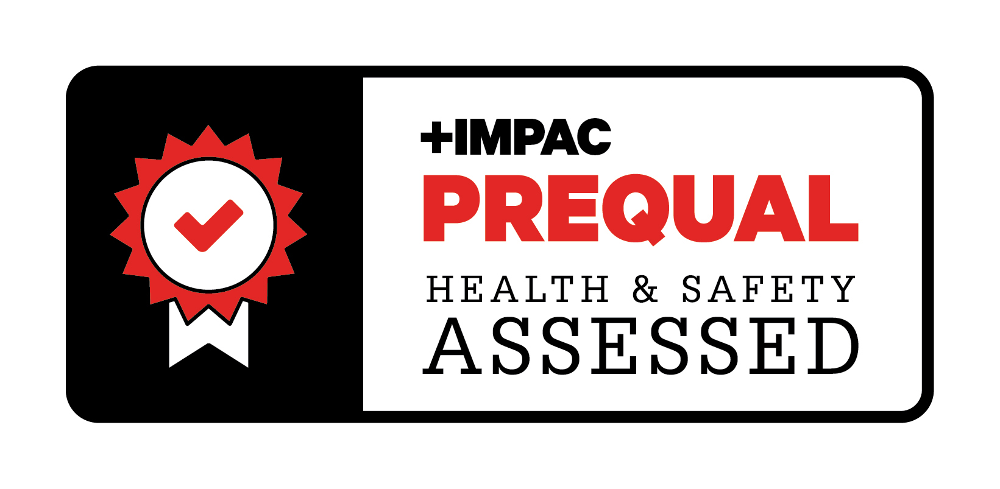
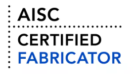
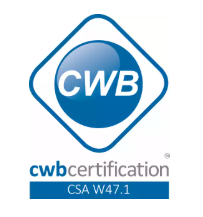
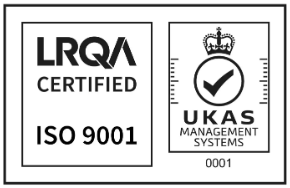
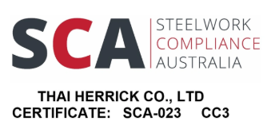

One Integrated Model
Planning, fabrication, logistics, and erection work as one delivery pathway instead of separate handoffs.
Our Story
CH Steel is an incorporated company with equal shareholding between Culham Engineering (New Zealand) and The Herrick Corporation (USA), formed to deliver end-to-end steel services with integrated planning, fabrication, logistics, and erection under one operating model.
Partnership Story
Built on shared values of integrity, transparency, and collaboration, the partnership combines local delivery depth with international-scale project experience to create practical value through certainty, quality, and programme control.
Planning, fabrication, logistics, and erection work as one delivery pathway instead of separate handoffs.
Culham's local execution depth and Herrick's international steel experience combine under one incorporated operating framework.
The partnership is built to reduce delivery risk, protect programme, and improve outcomes on high-consequence projects.
Herrick Capabilities
Culham Capabilities
Certifications
Partner certifications and credentials set the assurance baseline across our delivery network. They define the quality, process discipline, and safety governance applied to every project stage.
Market Presence
Established Partner Network Capability depth across major delivery sectorsCombined Scale
250,000T+ Total annual global capacityPartnership Depth
160 Years Combined steel delivery experience











Assurance In Practice
Quality and safety are coordinated under one delivery framework. These systems are embedded in planning, fabrication, logistics, and on-site execution.

Outcome 01
Quality And Compliance

Outcome 02
Health And Safety